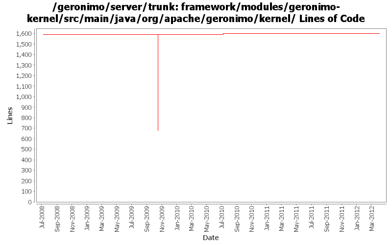

[root]/framework/modules/geronimo-kernel/src/main/java/org/apache/geronimo/kernel
 basic
(6 files, 1737 lines)
basic
(6 files, 1737 lines)
 classloader
(2 files, 243 lines)
classloader
(2 files, 243 lines)
 command
(2 files, 188 lines)
command
(2 files, 188 lines)
 config
(31 files, 8404 lines)
config
(31 files, 8404 lines)
 xstream
(0 files, 0 lines)
xstream
(0 files, 0 lines)
 osgi
(1 files, 88 lines)
osgi
(1 files, 88 lines)
 jar
(0 files, 0 lines)
jar
(0 files, 0 lines)
 proxy
(1 files, 66 lines)
proxy
(1 files, 66 lines)
 repository
(16 files, 2117 lines)
repository
(16 files, 2117 lines)
 rmi
(4 files, 285 lines)
rmi
(4 files, 285 lines)
 util
(15 files, 3175 lines)
util
(15 files, 3175 lines)

| Author | Changes | Lines of Code | Lines per Change |
|---|---|---|---|
| Totals | 24 (100.0%) | 926 (100.0%) | 38.5 |
| djencks | 18 (75.0%) | 926 (100.0%) | 51.4 |
| xuhaihong | 4 (16.7%) | 0 (0.0%) | 0.0 |
| gdamour | 2 (8.3%) | 0 (0.0%) | 0.0 |
GERONIMO-6112 Move the validation codes earlier, and avoid some unneeded process
0 lines of code changed in 2 files:
GERONIMO-6240 Make several base geronimo functions (kernel, deployer, etc) DS services and make the car-maven-plugin take advantage of that. Server assembly doesn't work yet, builds framework.
4 lines of code changed in 2 files:
GERONIMO-6058 Replace StringBuffer usage with StringBuilder
0 lines of code changed in 2 files:
better message
0 lines of code changed in 2 files:
Adapt to changed openejb-jee tree. Expose admin objects as osgi services
8 lines of code changed in 3 files:
GERONIMO-4916 step 2 move sandbox osgi framework into trunk
914 lines of code changed in 3 files:
GERONIMO-4916 step 1 remove old framwork
0 lines of code changed in 4 files:
GERONIMO-4293 some generics in kernel
0 lines of code changed in 4 files:
Should have been checked-in as part of my previous ci.
0 lines of code changed in 2 files: